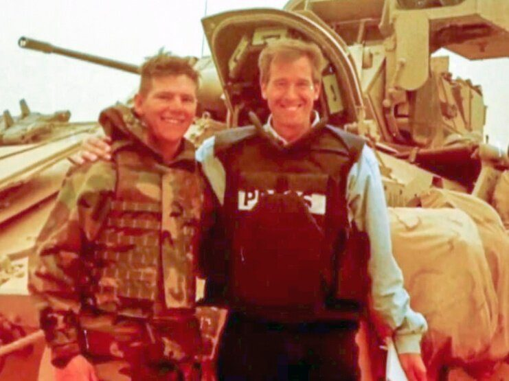

For almost a decade NBC anchor Brian Williams has repeated a story that when he was reporting from Iraq the helicopter he was flying in was hit by a rocket propelled grenade. It turns out that he was lying and for the last week he has been at the center of a media whirlwind with people across the country calling for his resignation. After he apologized, investigative sleuths dug deeper into other statements that he has made over the years and it appears that quite a few of his stories don’t check out. A lot of digital ink has been spilled on the affair, but I think that there is a larger issue at stake that has a lot more to do with the American public’s lack of knowledge about the media rather than Williams’ own statements.
Television is a medium for entertainment, and just about everything that appears on it is carefully produced behind the scenes. While it often appears that television hosts are investigating black markets, on the front lines of a war, or painstakingly filing FOIA requests to uncover government corruption on their own, the truth is that while the information they may present might be accurate and fact checked, the representation you see is almost always a fabrication. Before an anchor appears in the field producers, researchers, fixers and investigators have already tracked down leads, scouted potential locations, shot B-roll and prepped the interviewees and had them fill out release forms. When the anchor arrives on the scene the story is wrapped up in a tight little package and most of the time all the host has to do is shoot a few hours of film and then fly hope to begin prepping another story. The host gets the credit for the story and the TV viewing audience gets to identify with a single personality from one broadcast to another.
The end result is that TV journalists–and to some degree the big names in print and radio as well–are able to craft an outsized image of intrepid journalists working under dangerous conditions. They seem to be able to accomplish amazing feats of investigation almost every night as they scoot around the world and are always in the right place at the right moment. It’s all fiction. Hosts are characters, not journalists.
This holds true for any news personality you see. Whether it’s Anderson Cooper , Shane Smith, Lisa Ling, Diane Sawyer or Mike Rowe all of them benefit and take credit for the work of their staff. These hosts are often called “the talent” by the channels they work for, much to the chagrin of the people who actually do the groundwork that enables the veneer.
Given that this is the general state of the media, is it really any shock that Williams might make up a story about being shot at while on the job? The whole career path is based on the fiction that he is always at the center of the action. The job description includes him helicoptering into the middle of a developing story, shooting a few minutes and then flying back out to safety. The stories that he made up of being in the middle of the action help to cement his reputation with the general public and are simply an extension of the sorts of news shows that viewers demand.
We want to see hosts who are in the middle of things. We want to believe that the journalists that we have a nightly relationship with on the screen are the real deal. But it’s an impossible image to sustain. There is no way that Williams, or any other host, could actually do that amount of work even if they are supremely talented, as I have no doubt Williams is. I’ve been an investigative journalist for almost ten years and while I have been in the middle of “the action” a few times–held up by child soldiers, shadowed by hit men, and confronted organ traffickers–those events are extremely rare. Most of the time I sit at a desk and do the ground work for my stories all on my own. A full investigation can take six months to a year and only result in one tantalizing anecdote. The reason that Williams and other hosts are able to present the image that they do is because there are dozens of people like me working behind them to set up the scenes.
Williams shouldn’t have lied. It did a disservice to the soldiers who actually were under fire that day. However, if the media is going to crucify him for his accounts they should also take this time to acknowledge that much of what the see on TV isn’t exactly true, either.